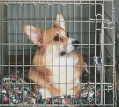

Rehome / Rehome Process
If you decide that you do need to re-home your dog, follow the guidelines below to maximize your search efforts and help your dog make a smooth transition into her new home. Keep in mind that finding the right person or family for your dog may take some time and effort, but your patience and hard work will pay off in the end.
Your Search
- Prepare your dog Before you get started, spay or neuter your dog if you haven’t done so already. Also make sure she’s healthy and up-to-date on her vaccinations. It’s a good idea to print her veterinary records and keep them handy so that you can give them to her new pet parent.
- Take some good color photos Focus on illustrating your dog’s most adorable qualities and her favorite activities. If she’s crazy about fetching, for example, take a picture of her happily posing with her favorite ball.
- Provide detailed information Write a paragraph or two about your dog. Explain why she needs a new home, describe what kind of home would be best for her, and outline her likes and dislikes. Be sure to list your favorite things about her. Mention the most entertaining and endearing aspects of her personality. Be creative! It might help to write from her perspective: “Hi, my name is Daisy and I need a new home! I’m a lively Boston terrier mix who loves playing tug and cuddling with oversized stuffed animals. I don’t get along well with cats—but I adore kids…”
- Spread the word After you’ve taken a few great photos of your dog and written a brief description of her, you can start searching for her new home.
- E-mail everyone you know and ask them to forward your message to their friends and family.
- Put up posters and fliers at pet stores, dog daycares, dog parks, veterinary clinics, boarding facilities and pet grooming salons. Be sure to include your telephone number or e-mail address so that interested parties can easily reach you.
- Make a bandana or a t-shirt for your dog that says, “Adopt me!” Then you can take her on walks to show her off. Go to outdoor cafés, parks where people walk dogs and other areas with high foot traffic. o Place an ad in your local newspaper. Include the best photo of your dog and your written description of her. When people see the ad and contact you, screen applicants carefully. (Please see Choosing the Right New Home, below.)
- Charge a fee Unless you’re placing your dog with a friend or relative, charge an adoption fee. Doing so is likely to discourage anyone with malicious intentions. If an individual wants to adopt your dog for the right reasons, a nominal fee should not deter him or her. If you like, you can ask the person to make out the check to a local animal shelter. In addition to assuring yourself that you’ve chosen a good adoptive home for your dog, you’ll help other animals who need new homes.
Choosing the Right New Home
When an interested party contacts you about your dog, the first step is to conduct a thorough telephone interview. Ask many questions, including the following:- Why are you interested in my dog? What specifically attracts you to her?
- Where will the dog live during the day?
- Where will she sleep at night?
- What kind of activities do you want to do with the dog? Do you plan on training her? If so, how?
- Where will you take the dog for veterinary care?
- Do you have any other pets? Do you have a family or roommates living with you?
- Have you ever had a dog before? If so, what happened to him or her? You can also ask to see veterinary records for previous pets to verify that they received proper care.
- What would you do if you had to give up the dog for some reason in the future? Let the prospective adopter know if you’re willing to take your dog back in the event that things don’t work out.
- Arrange a meeting The person should visit you and your dog at your home, meet you somewhere in public, or invite you to visit his or her home. It’s important to see how the person interacts with your dog—and how your dog reacts to him or her. Does your dog seem to like the person? If a family is interested in adopting your dog, does your dog seem to like everyone in the family, including any young children?
- Ask for the landlord’s contact information If the prospective adopter rents a house or apartment, it’s a good idea to verify that he or she has permission to keep a pet.
- Get references Ask for written or verbal references from the person’s friends, neighbors and, if possible, a veterinarian. Do these individuals readily claim that the person will be a responsible and loving pet parent?

San Diego Humane SocietyShelters
- Escondido Campus
3450 E. Valley Parkway
Escondido, CA 92027
760.888.2275 - Oceanside Campus
2905 San Luis Rey Road
Oceanside, CA 92058 760.757.4357 - San Diego Campus
5500 Gaines Street
San Diego, CA 92110
619.299.7012
Off-Site Adoption Locations
- Petco El Cajon
619.876.6898
540 N. Second Street
El Cajon, CA 92021 -
Petco Oceanside
760.754.1400
3875 Mission Avenue
Oceanside, CA 92054 - Helen Woodward Animal Center
858.756.4117
6461 El Apajo Road
Rancho Santa Fe, CA 92067 - The Barking Lot
619.354.4825
486 Raleigh Ave
El Cajon, CA 92020